Trợ lý cuộc họp AI ghi âm, phiên âm thời gian thực, nhận diện người nói, và tạo biên bản tự động — tất cả chạy trên máy của bạn.
Không phụ thuộc cloud. Không đăng ký. AI mạnh mẽ chạy ngay trên máy bạn.
Nvidia Riva hoặc Soniox streaming với độ trễ dưới một giây. Chữ hiện ngay khi được nói.
Nhận diện ai đang nói dựa trên pitch và đặc trưng giọng nói. Mỗi giọng nói được tự động gán nhãn.
Dịch trực tiếp sang 12+ ngôn ngữ. Bản dịch hiển thị ngay dưới mỗi dòng phiên âm.
Tóm tắt một cú click: tiêu đề, ý chính, hành động, quyết định, rủi ro. Xuất Markdown hoặc Word.
Bản ghi lưu liên tục vào SQLite. Dù ứng dụng crash, dữ liệu cuộc họp vẫn an toàn.
Mọi thứ chạy cục bộ. API keys chỉ lưu trên máy bạn. Không dữ liệu nào rời đi mà không có sự đồng ý.
Tải bản cài đặt cho macOS hoặc Windows. Cài đặt một click, không cần cấu hình.
Nhập Nvidia Riva hoặc Soniox key trong Cài đặt. Gói miễn phí có tại build.nvidia.com hoặc soniox.com.
Nhấn Record — phiên âm trực tiếp, nhãn người nói, và dịch thuật hiện ngay lập tức.
Miễn phí và mã nguồn mở. Có sẵn cho macOS và Windows.
Lần đầu cài đặt? Xem Hướng dẫn cài đặt bên dưới để biết hướng dẫn thiết lập cho từng nền tảng.
Làm theo các bước sau để Scribble hoạt động trong vòng 5 phút. Ảnh chụp màn hình kèm theo mỗi bước.
Cài Scribble lên máy của bạn
Nhấn nút Tải xuống ở phần bên trên để tải file .dmg. Tìm file trong thư mục Downloads của bạn.
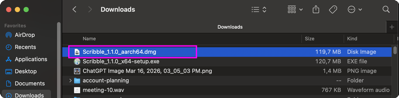
Double-click file .dmg. macOS có thể hiện cảnh báo "Scribble_1.0.0_aarch64.dmg Not Opened" vì file chưa được ký. Nhấn "Done" — chúng ta sẽ sửa ở bước tiếp.
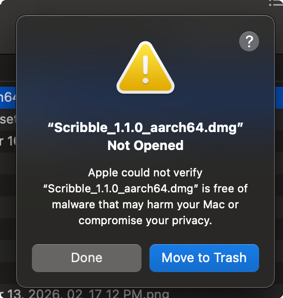
Mở System Settings → Privacy & Security. Cuộn xuống tìm thông báo Scribble và nhấn "Open Anyway" để cho phép DMG chạy.
xattr -cr ~/Downloads/Scribble*.dmg trong Terminal
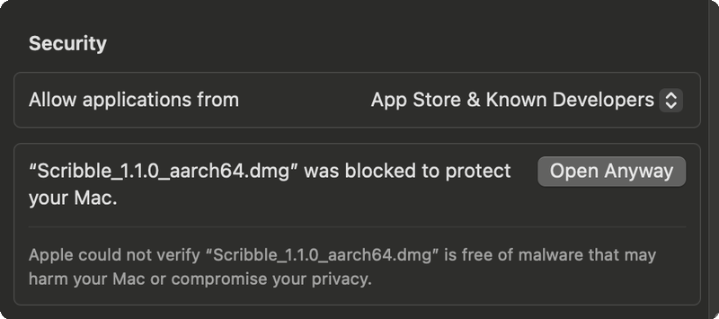
Hộp thoại xác nhận sẽ xuất hiện. Nhấn "Open Anyway" và nhập mật khẩu để tiếp tục.
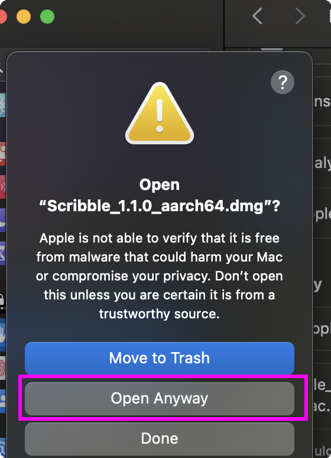
DMG sẽ mở hiện icon Scribble và shortcut thư mục Applications. Kéo icon Scribble vào Applications để cài đặt.
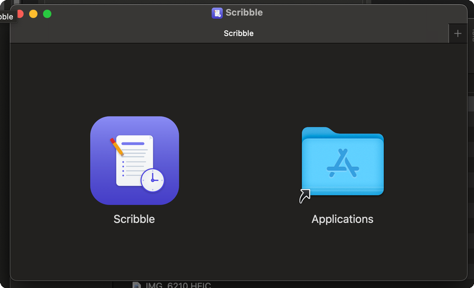
Khi bạn lần đầu mở Scribble từ Applications, macOS hiện thêm cảnh báo "Scribble Not Opened". Nhấn "Done" — cần cho phép qua Privacy & Security lần nữa.
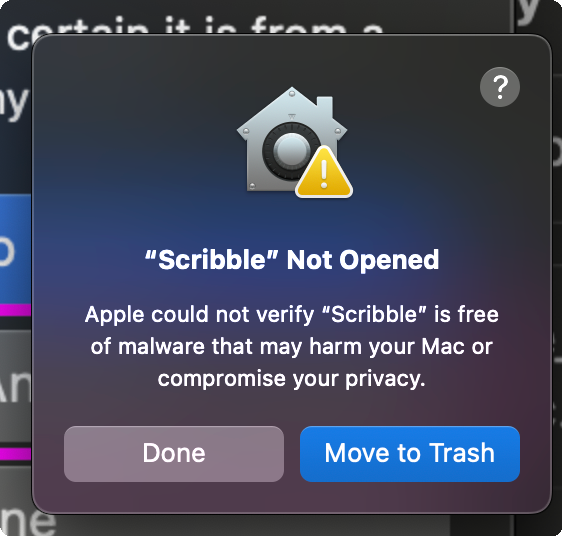
Quay lại System Settings → Privacy & Security. Bạn sẽ thấy Scribble bị chặn. Nhấn "Open Anyway" một lần nữa.
xattr -cr /Applications/Scribble.app để bỏ qua bước này
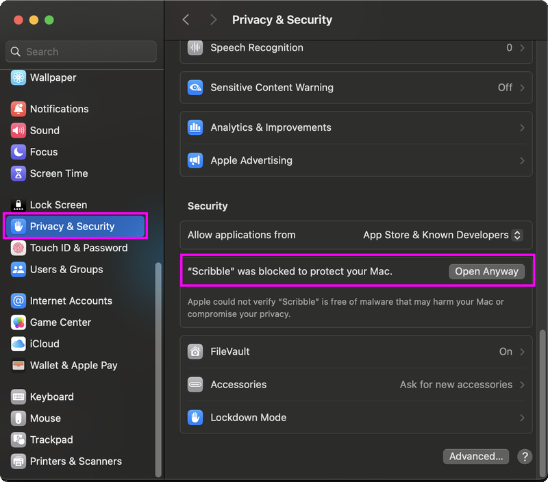
Hộp thoại Gatekeeper xuất hiện lần cuối. Nhấn "Open Anyway" và xác thực bằng mật khẩu hoặc Touch ID.
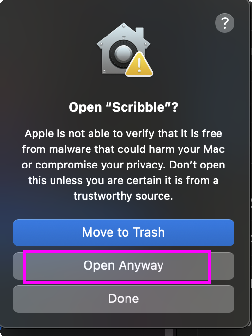
Ứng dụng khởi chạy thành công. Bạn sẽ thấy giao diện chính Scribble. Tiếp tục Phase 2 để thiết lập API key.
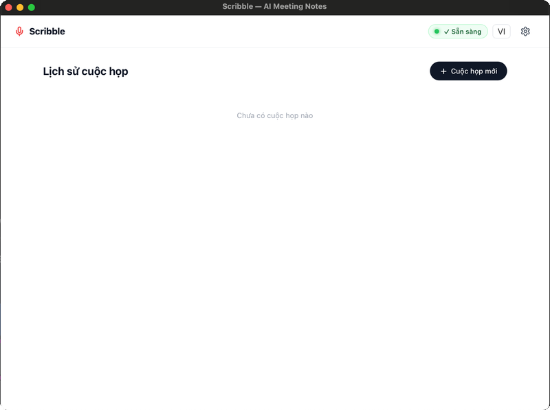
Nhấn nút Tải xuống ở phần bên trên để tải file .exe. Trình duyệt có thể hiện cảnh báo file ít được tải — điều này bình thường với ứng dụng mới.
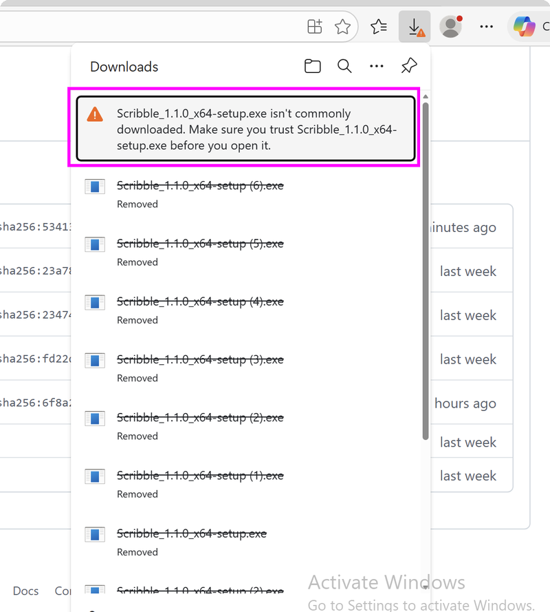
Nhấn menu ba chấm (⋯) trên thanh cảnh báo tải xuống. Chọn "Keep" từ dropdown để giữ file thay vì xóa.
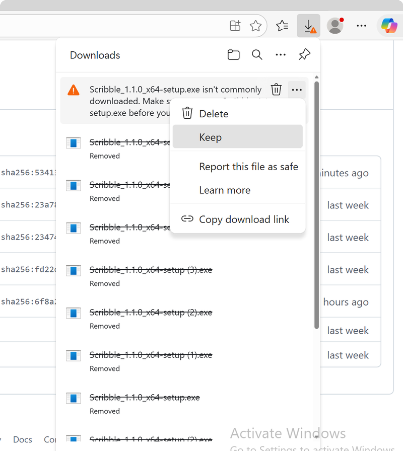
Xác nhận lần hai xuất hiện. Nhấn "Keep anyway" để xác nhận lưu bộ cài.
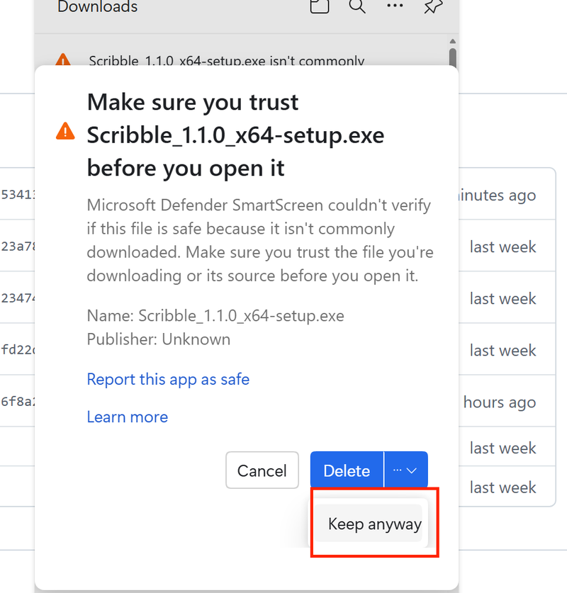
Vào thư mục Downloads và double-click Scribble_1.0.0_x64-setup.exe để bắt đầu cài đặt.
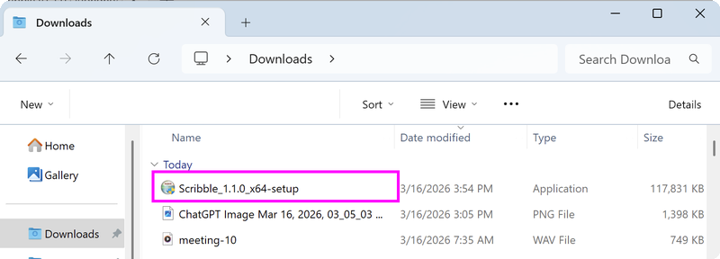
Windows Defender SmartScreen sẽ hiện "This app might harm your device". Nhấn "Show more ∨" để hiện tùy chọn tiếp tục.
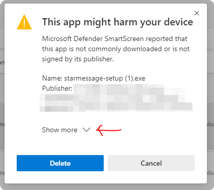
Sau khi nhấn "Show more", nút "Install anyway" xuất hiện. Nhấn để tiếp tục cài đặt.
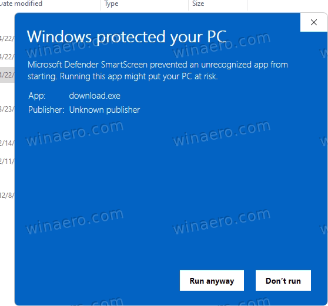
Trình cài đặt sẽ hướng dẫn bạn qua các bước còn lại. Chọn ngôn ngữ, vị trí cài đặt, và Scribble sẽ sẵn sàng trong vài giây. Tiếp tục Phase 2 để thiết lập API key.
Cần thiết cho tính năng phiên âm và AI (có gói miễn phí)
Vào build.nvidia.com và nhấn nút "Login" ở góc trên bên phải. Nếu chưa có tài khoản, bạn cần tạo mới.
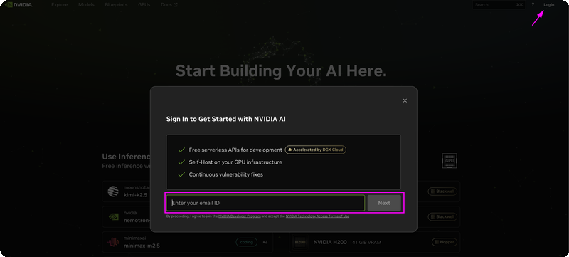
Điền email, mật khẩu, hoàn thành hCaptcha, rồi nhấn "Create Account". Bạn cũng có thể đăng ký qua Google hoặc GitHub.
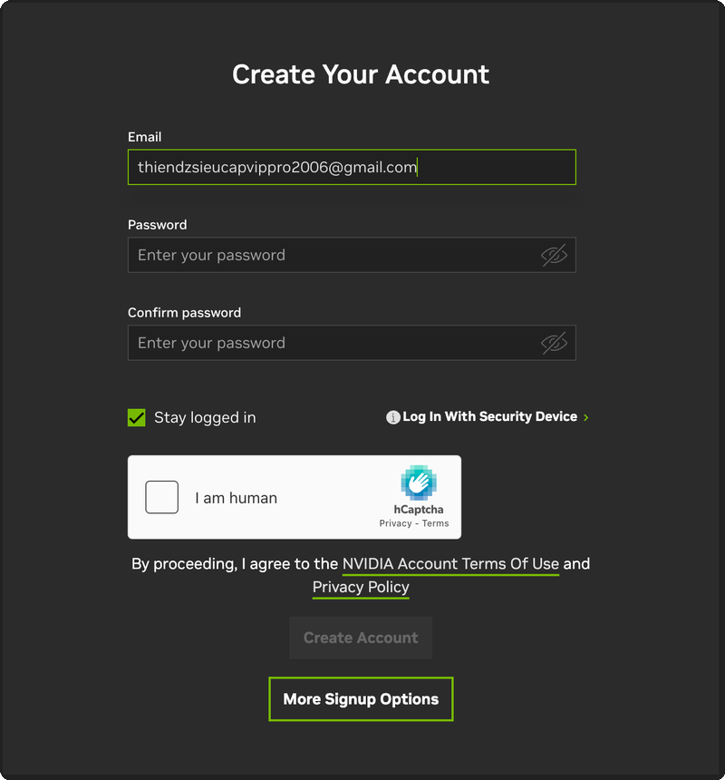
NVIDIA sẽ gửi mã 6 chữ số đến email. Nhập mã và nhấn "Continue".
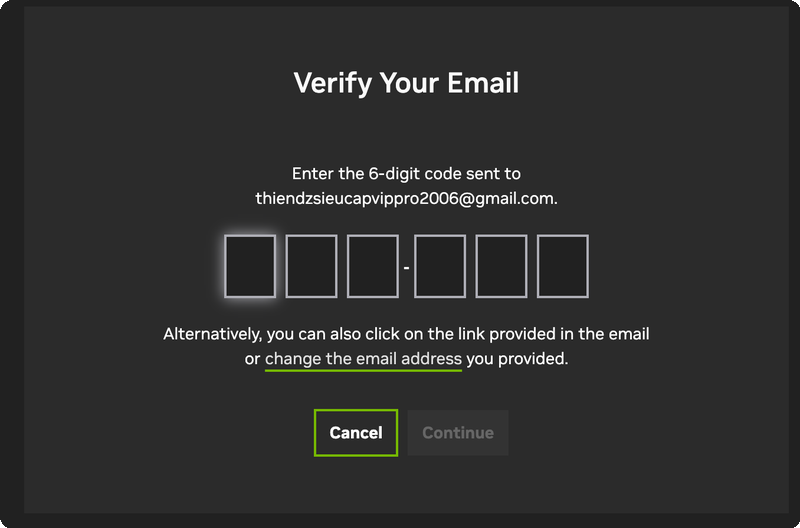
Xem lại cài đặt tùy chọn (không bắt buộc). Nhấn "Submit" để hoàn tất tài khoản. Bạn sẽ được chuyển đến trang quản trị NVIDIA.
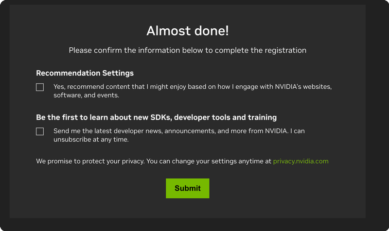
Bạn sẽ được yêu cầu tạo NVIDIA Cloud Account. Nhập Cloud Account Name (ví dụ: tên bạn hoặc tổ chức), rồi nhấn "Create NVIDIA Cloud Account".
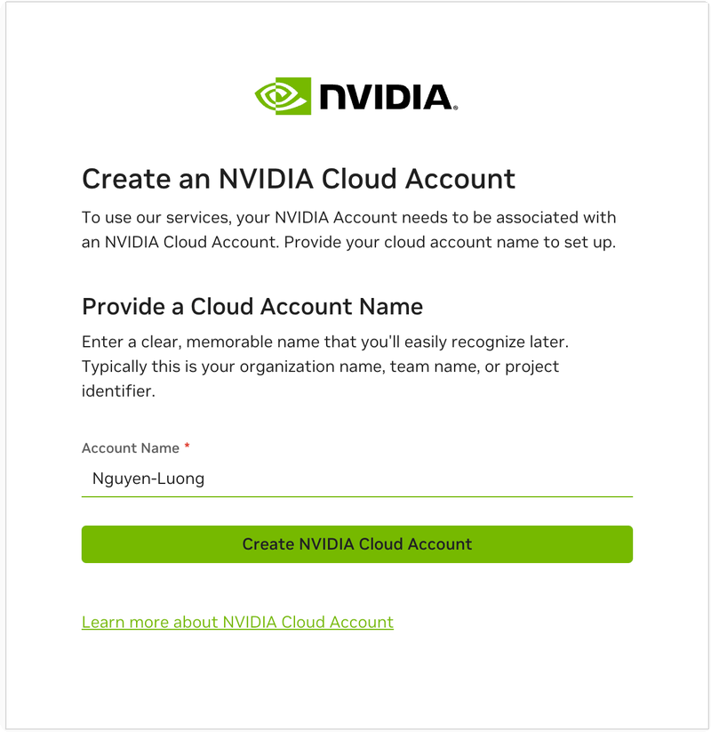
Sau khi đăng nhập, bạn sẽ thấy banner vàng phía trên: "Please verify your account to get API access". Nhấn nút "Verify" bên phải banner.
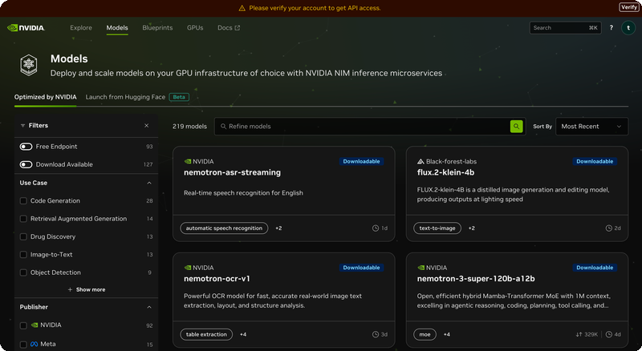
Hộp thoại yêu cầu số điện thoại sẽ xuất hiện. Chọn Location, nhập Phone Number, rồi nhấn "Send Code via SMS". Nhập mã OTP nhận được để hoàn tất xác minh.
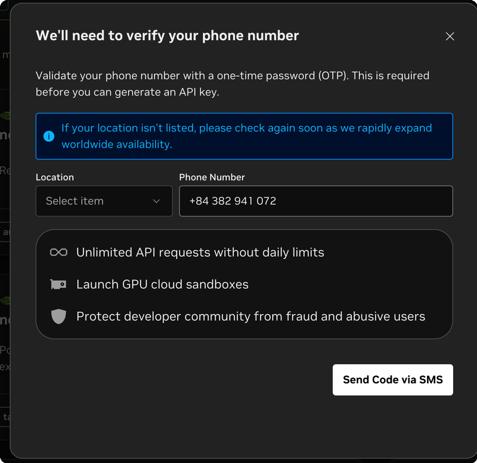
Nhấn icon hồ sơ ở góc trên bên phải, rồi chọn "API Keys" từ menu dropdown.
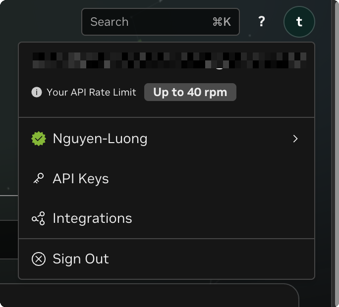
Nhấn "Generate API Key". Sao chép key ngay lập tức và lưu ở nơi an toàn — bạn sẽ không thể xem lại nó!
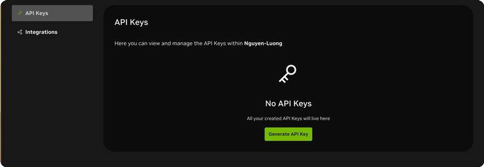
Dán API key và thiết lập mô hình AI
Mở Scribble, nhấn biểu tượng ⚙️ Settings ở góc trên bên phải. Trong phần Riva, bạn sẽ thấy các trường cấu hình kết nối.
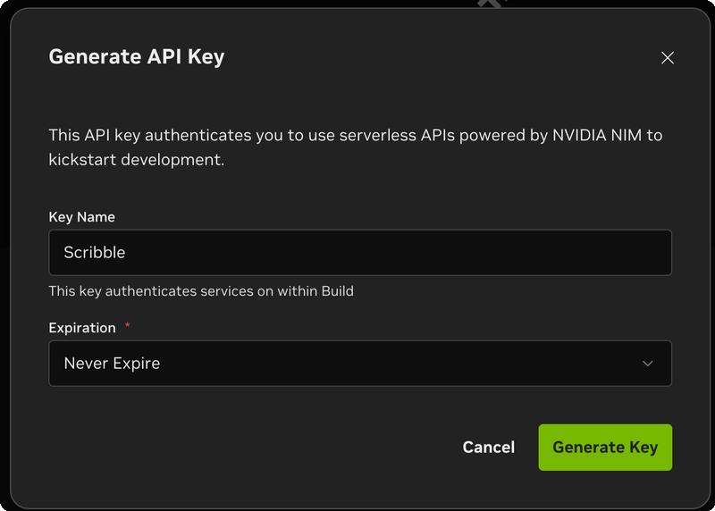
Dán NVIDIA API key vào trường API Key. Sau đó nhập server URL và nhấn "Test Connection" để kiểm tra.
nvapi-xxxx (your NVIDIA API key)
grpc.nvcf.nvidia.com:443
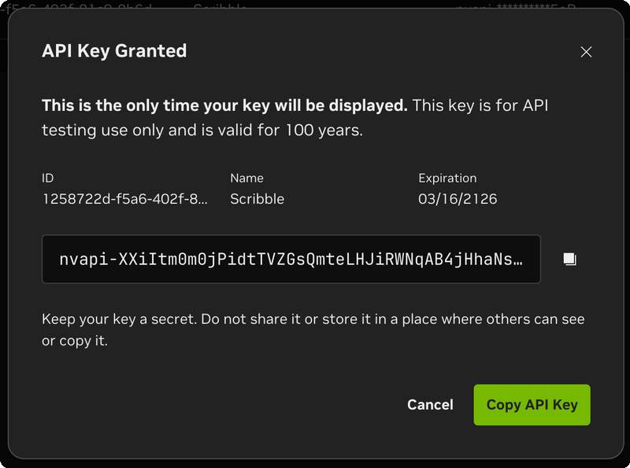
Cuộn xuống phần AI Assistant. Dán cùng NVIDIA API key vào trường API Key.
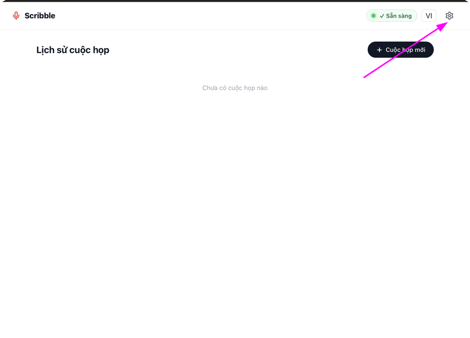
Nhập địa chỉ server và tên model trong phần AI Assistant. Nhấn "Save" để áp dụng tất cả cài đặt.
https://integrate.api.nvidia.com/v1
deepseek-ai/deepseek-v3.2
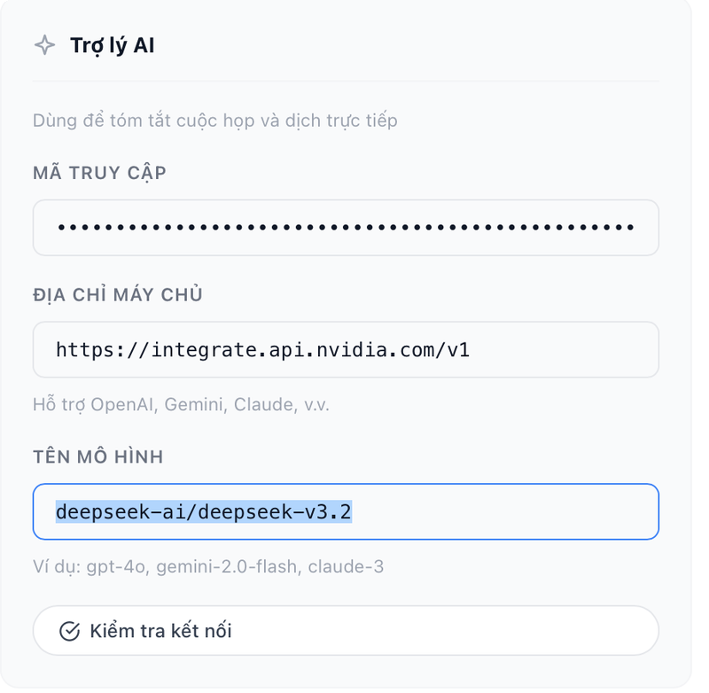
Cấp quyền và bắt đầu phiên đầu tiên
Khi bạn nhấn "Record" lần đầu, macOS sẽ yêu cầu quyền Screen & System Audio Recording. Nhấn "Open System Settings" để đến thẳng bảng cấp quyền.
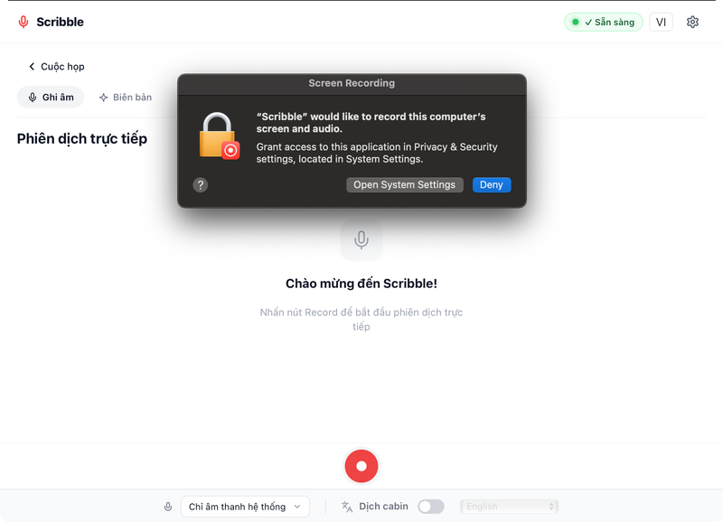
Trong System Settings → Privacy & Security → Screen & System Audio Recording, tìm Scribble trong danh sách và bật ON. Có thể cần nhập mật khẩu.
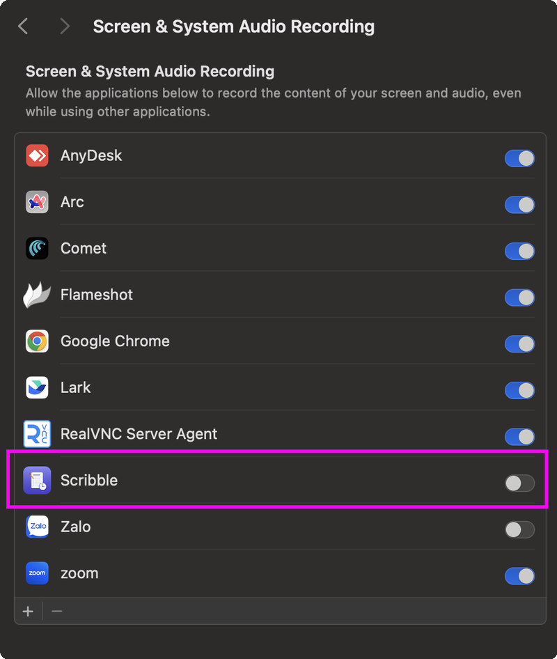
Tạo cuộc họp mới, nhấn Record, và xem phiên âm thời gian thực với nhận diện người nói xuất hiện ngay lập tức. Scribble tự động nhận diện người nói và phát trực tiếp bản ghi.
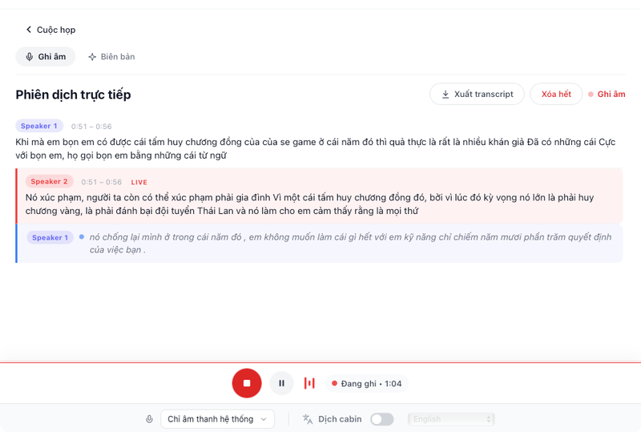
Có. Scribble 100% mã nguồn mở — bạn có thể kiểm tra từng dòng code trên GitHub. Cảnh báo bảo mật xuất hiện vì ứng dụng chưa được ký bằng chứng chỉ thương mại.
Scribble dùng backend Python (đóng gói bằng PyInstaller) mà một số phần mềm diệt virus nhầm báo là mã độc. Đây là lỗi dương tính giả phổ biến ảnh hưởng nhiều ứng dụng Python.
Không. Cả NVIDIA và Soniox đều cung cấp gói miễn phí. NVIDIA tại build.nvidia.com, Soniox tại soniox.com. Đăng ký và tạo API key miễn phí.